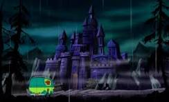
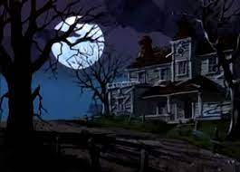
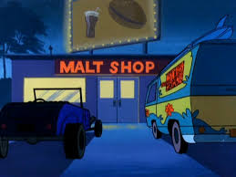

A Mistério S/A é chamada para investigar um farol abandonado, onde luzes estranhas têm sidos vistas à noite. Há rumores de que o lugar é assombrado pelo antigo guardião do farol.
A EQUIPE CHEGA AO FAROL E VÊ AS LUZES ESTRANHAS NO TOPO.

SE A EQUIPE SOBE AO TOPO DO FAROL.
SE A EQUIPE VAI AO PORAO
